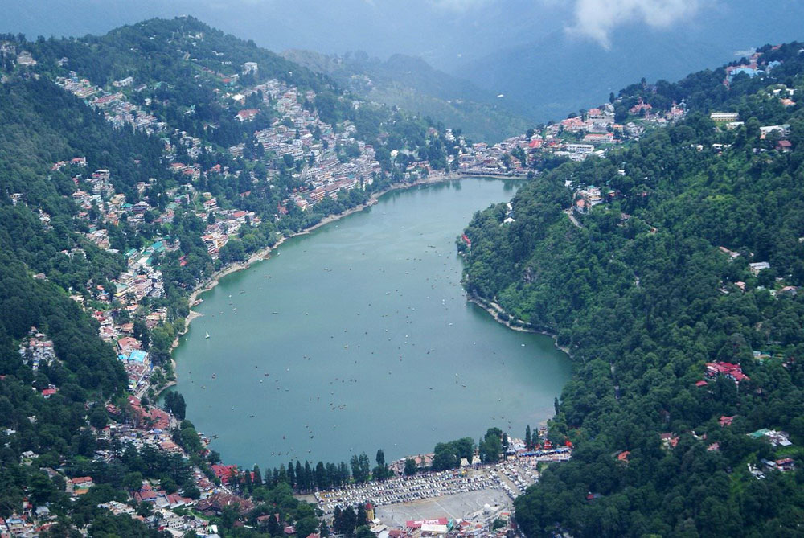
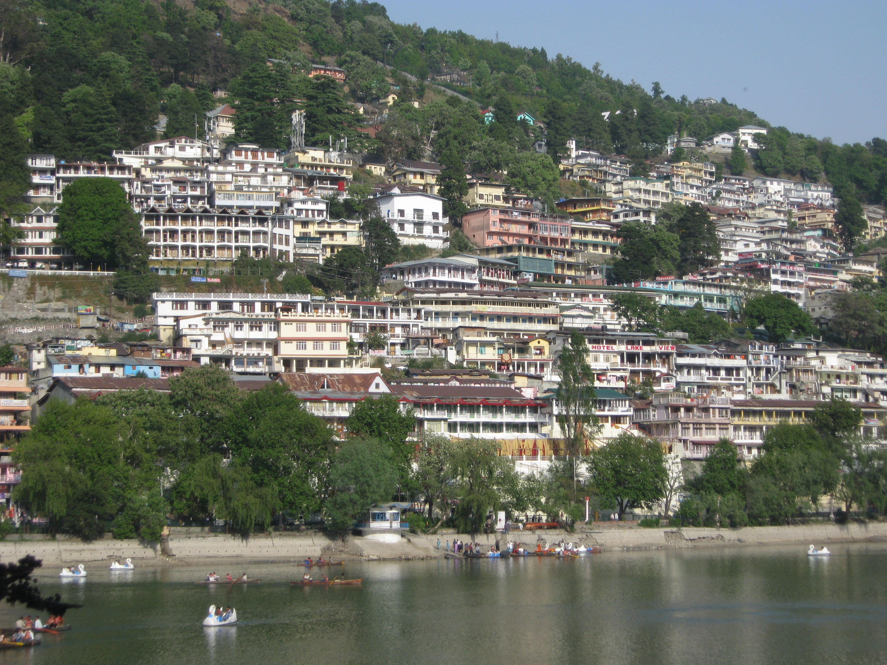
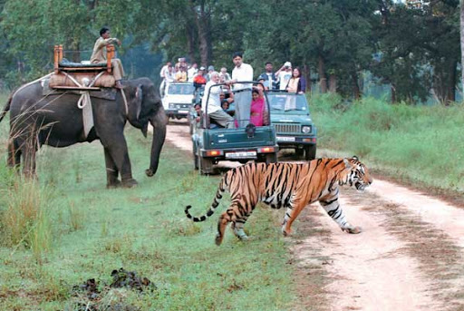

Nainital Tour Packages
5Days/4Night
Jumbo Discount Price Rs.24,890/-
About the Destination
Nainital – The Lake District of India! This spectacular Himalayan resort town, was a favourite pick of the British colonisers too. For them it was like finding an escape in our nation which seemed so close to their home. The very factor of experiencing a whole new exotic destination which gives you a feel of being in an international destination is enough to attract you towards Nainital! The 80’s and 90’s era Bollywood’s personal favourite and a lively winter sport destination, it is the dearest choice of every travel enthusiast. The ambience of Nainital is welcoming just like its warm-hearted people which can be experienced along with our Nainital family package.
The Geography and Seasons
A Himalayan resort town in the Kumaon region of India’s gorgeous Uttaranchal state forms a timeless escape with our affordable Nainital tour package price. Formerly a British hill station, get a chance to experience this land along with our Nainital travel packages. Nainital is set around Nainital Lake, a popular boating site with Naina Devi Hindu Temple on its north shore welcoming tourists and offering leisurely escapes since decades.
The Culture
Experience this land’s culture which is diverse, different and dynamic along with our best Shimla tour packages! The state as well as the tourism favourable city of Shimla is a healthy mix of people belonging to different religions, communities and tribes. This can be predominantly experienced along with our online Nainital tour package. Traditional music and dance is a trademark of the state along with special handicrafts.
The Experience
Traveling to a destination and actually exploring it gives you the real essence of being one with that place! It is easy to read, to listen and to talk about the cultural aspects, the traditions followed, the natural landscapes or the sightseeing highlights of a particular place but to actually be there and live those moments, is the only experience which can be etched in your memory forever.
|
|  |
 |
 |
 |
|